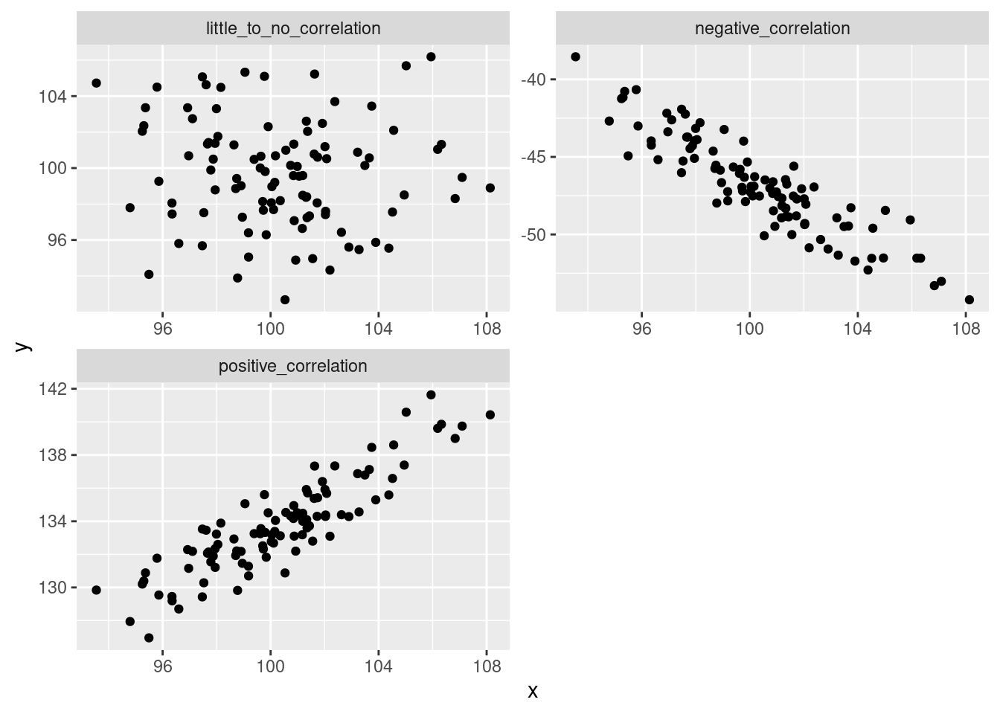

library(ggplot2)
library(tidyr)
library(dplyr)##
## Attaching package: 'dplyr'## The following objects are masked from 'package:stats':
##
## filter, lag## The following objects are masked from 'package:base':
##
## intersect, setdiff, setequal, unionGenerally speaking, we tend to have a pretty good idea of what correlation is. But what does it really tell us? And how can we calculate correlation? This lesson may be a bit dense, but I hope it will help you understand and appreciate a test that we often take for granted.
Correlation quantifies the strength and direction of association between two numeric variables. If two variables are correlated, when we see an increase in one we should see an increase in the other. If they are negatively correlated, when one increase we should see a decrease in the other. Association means that knowing values of one variable gives you knowledge of the possible values of the other variable. Correlation (the type that we’ll deal with) quantifies how closely the association between two variables approximates a straight line.
It’s often easy to see this in plot form:
x <- rnorm(100, mean = 100, sd = 3)
y <- rnorm(100, mean = 100, sd = 3)
r <- 0.90
kpos <- sqrt(1 - r^2)
ypos <- r*x+kpos*y
r <- -0.90
kneg <- sqrt(1 - r^2)
yneg <- r*x+kneg*y
xx <- data.frame(x = rep(x, times = 3),
y = c(ypos, yneg, y),
fct = rep(c("positive_correlation",
"negative_correlation",
"little_to_no_correlation"),
each = 100))
ggplot(xx, aes(x = x, y = y)) +
geom_point()+
facet_wrap(~fct, scales = 'free', nrow = 2)
But how do we measure this?
Let’s walk through an example.
Let’s say that we’re interested in whether the number of films per year that actor Nicolas Cage appears is associated with the number of female editors on the Harvard Law Review (this is real correlation, btw. It’s also real ridiculous.)
sp_cor <- data.frame(year = factor(2005:2009),
cage_films = c(2, 3, 4, 1, 4),
fem_editors = c(9, 14, 19, 12, 19))
head(sp_cor)## year cage_films fem_editors
## 1 2005 2 9
## 2 2006 3 14
## 3 2007 4 19
## 4 2008 1 12
## 5 2009 4 19str(sp_cor)## 'data.frame': 5 obs. of 3 variables:
## $ year : Factor w/ 5 levels "2005","2006",..: 1 2 3 4 5
## $ cage_films : num 2 3 4 1 4
## $ fem_editors: num 9 14 19 12 19OK, so we don’t have too many data points, but from what we have, it looks like the more female editors at Harvard Law Review, the more Nicolas Cage films there are (or vice versa).
ggplot(sp_cor, aes(x = cage_films, y = fem_editors))+
geom_jitter()From the other examples and tests that we’ve looked at, we know that variables…, well…, vary. So, if there is a relationship between two variables, we should expect that if one deviates from its mean, the other should as well. So, one way to measure association between two variables is to look at the covariance.
# don't worry too much about these next two chunks, but if you do want to reproduce it you will need the "tidyr" package.
sp_cor_long <- gather(sp_cor,
key = variable,
value = measurement,
cage_films:fem_editors)
sp_cor_long <- sp_cor_long %>%
group_by(variable) %>%
mutate(deviation = measurement - mean(measurement))#
ggplot(data = sp_cor_long) +
geom_point(aes(year, measurement, color = variable), size = 2) +
geom_text(aes(year,
measurement,
color = variable,
label = deviation),
nudge_y = -0.5,
nudge_x = -0.2
)+ geom_abline(
slope = 0,
intercept = mean(sp_cor$fem_editors),
color = '#00BFC4'
) + geom_abline(
slope = 0,
intercept = mean(sp_cor$cage_films),
color = '#F8766D'
) + geom_segment(data = sp_cor, aes(
x = year,
xend = year,
y = mean(fem_editors),
yend = fem_editors),
color = '#00BFC4',
linetype = 2
) + geom_segment(data = sp_cor, aes(
x = year,
xend = year,
y = mean(cage_films),
yend = cage_films),
color = '#F8766D',
linetype = 2
) + ggtitle(label = "Is there a relationship between: ", subtitle = "the number of films Nicolas Cage appears in & \nthe number of female editors on the Harvard Law Review?"
) + ylab("count"
) + scale_color_discrete(name = "Number of: ",
labels = c("Nicolas Cage films" ,"HLR female editors")
) + annotate(geom = 'curve',
x = 5, y = 10,
xend = 5.5, yend = mean(sp_cor$fem_editors),
arrow = arrow(),
color = '#00BFC4',
curvature = 0.4
) + annotate(geom = "text",
x = 4, y = 10, label = "mean HLR female editors"
) + annotate(geom = 'curve',
x = 5, y = 7,
xend = 5.5, yend = mean(sp_cor$cage_films),
arrow = arrow(),
color = '#F8766D',
curvature = -.4
) + annotate(geom = "text",
x = 4, y = 7, label = "mean N. Cage films")To walk through the calculation of covariance “by hand”, go to the supplement.
For four years, the number of films and number of editors deviates from the mean in the same direction.
To calculate variance for one variable, we squared (and then summed) the deviance from the mean. Why did we square? So that positive and negative values wouldn’t cancel each other out. With two variables, we can just multiple the deviance for one variable by the second variable’s corresponding deviance. Values with the same sign will end up positive while those with different signs will be negative. This is perfect because now we have values that tell us how the deviance relate between variables and not just how they relate to their respective means.
We then take the sum and divide by \(N - 1\). In this case, \(N = 5\).
Covariance has a problem, however; the value is dependent on the original scales. If we change the scale, we will get different values, even if the association is the same. For instance, here’s age and height (in cm) in NBA star Anthony Davis.
# cm
age <- c(14, 15, 17, 19)
height <- c(180, 188, 200, 208)
cov(age, height)## [1] 27.33333That height and age would correlate for people under 20 isn’t too surprising. But what if we use meters instead of centimeters?
# in meters
height_m <- height/100
cov(age, height_m)## [1] 0.2733333Those covariance scores makes sense, but they clearly aren’t standardized.
To standardize covariance we multiply the standard deviations of the two variables and then divide the covariance value by the multiplied standard deviations. That’s a bit of a mouthful. The important thing to note is that we can get a standardized value and it’s called the correlation coefficient; more specifically, the Pearson product-moment correlation coefficient. The correlation coefficient is a single value that quantifies the straight-line association and is typically represented by they symbol \(r\). Because \(r\) is a standardized scale and it ranges from -1 to 1. -1 is a perfect negative correlation, 1 is a perfect positive correlation, and 0 is no correlation at all.
So what is our correlation coefficient for the number of female editors and Nicolas Cage films? We can use the function cor() to find out.
cor(sp_cor$fem_editors, sp_cor$cage_films)## [1] 0.8554467But what, if anything, does our \(r\) tell us? It tells us about the strength and direction (positive or negative) of two variables in our sample data. But, generally, we want to draw inferences from our data. With the what we’ve seen so far, we can’t do that yet.
Luckily, we can convert the \(r\) value into a \(t\)-value. What’s even better, you don’t have to convert it by hand! The function cor.test() will do it for you. But once you do calculate the \(t\)-score, you can interpret like other \(t\)-scores. And you can use the score to calculate your p-value.
Before we do that, though. Let’s define our hypothesis test. Because, what would our p-value really tell us in this case?
H0: The true correlation between the number of female editors at the \(Harvard \ Law \ Review\) and the number of Nicolas Cage films is 0 (\(r\) = 0) HA: The true correlation between the number of female editors at the \(Harvard \ Law \ Review\) and the number of Nicolas Cage films is not 0 (\(r \ne\) 0)
Note that the formulation is the same as with the t-tests. Now, however, we are using the correlation coefficient instead of the mean to calculate our test statistic (the \(t\)-score)
Let’s run the test:
cor.test()cor.test(sp_cor$fem_editors, sp_cor$cage_films)##
## Pearson's product-moment correlation
##
## data: sp_cor$fem_editors and sp_cor$cage_films
## t = 2.861, df = 3, p-value = 0.06452
## alternative hypothesis: true correlation is not equal to 0
## 95 percent confidence interval:
## -0.1093485 0.9903012
## sample estimates:
## cor
## 0.8554467The output is pretty similar to the output of different t-tests that we ran. We get our t-score, degrees of freedom, p-value, 95% confidence intervals, and sample estimates. Again, the sample estimate is not the mean in this case, but rather the correlation coefficient.
So, what is the interpretation of the p-value here?
Assuming that the true correlation of N. Cage films and female HLR editors is 0, we expect to see a correlation at least as extreme as 0.855 (-0.855 as well, it was a two-tailed test) roughly 6.4% of the time.
This is, well, good news, I guess? Granted, we took some assumptions for granted in our testing but that p-value is pretty low and if we had had a less strict criteria (e.g., \(\alpha = 0.1\)), we would say it’s statistically significant. Still, it seems pretty unlikely that this correlation is anything but noise. I doubt that Nicolas Cage is basing his movie making decisions on the editorial board of the \(Harvard \ Law \ Review\); or vice versa.
It’s worth reiterating what our p-value means. One in ten or one in twenty chances are not the same as 0% chance. This is why we do corrections for multiple comparisons (e.g., Bonferroni correction, Benjamani-Hochberg procedure) if you run multiple tests on the same data. If you go through a data set and look for correlations or search for statistically significance, you will undoubtedly find significance, even if the null is true. If you perform 100 tests, we should expect 5 of those tests to yield p-values that are equal to or less than 0.05, even if the null is true in every single test.
The website where I got this example from (Spurious Correlations) tries to make this point abundantly clear by demonstrating tons of ridiculous examples. If we looked at a larger sample of years, we would likely find that the number of HLR female editors and Nic Cage movies is not nearly as closely correlated. But that’s not as fun.
Let’s also dive deeper into what correlations in general tell us.
You have likely heard the phrase, “correlation does not equal causation”. The correlation coefficient cannot tell us if \(y\) is caused by \(x\) because it cannot rule out 3rd party effects (things that affect both \(x\) and \(y\)). The famous example is the correlation between murder rate and ice cream sales; in many US cities both increase during the summer, yet it is improbable that ice cream makes people want to kill (or that killing makes people want to eat ice cream). Likewise, even if we had found a statistically significant correlation between Nic Cage movies and female HLR editors, we would not be able to establish a causal relationship. For instance, both could be affected by economic factors.
Still, even if we could rule out 3rd party effects, correlation could not tell us which variable affects the other. Correlation tells us about the direction of the association, whether the correlation is negative or positive, but correlation does not tell us about the direction of causality. For instance, if we find a strong positive correlation between height and amount of time playing organized basketball, correlation does not allow us to statistically rule out the possibility that playing basketball makes you taller (even if logic and biology allow us to rule out that hypothesis).
The correlation coefficient tells us about the strength of association but it does not tell us how “steep” the relationship is. That is, two data sets can have similar \(r\) values, yet very different slopes. For instance, let’s say we found a strong correlation in American university students between the number of ads heard per week in podcasts and the amount of time shopping online. We then looked at Austrian university students and found the exact same correlation coefficient. This doesn’t necessarily mean that Americans and Austrians spent the same amount of time shopping online per ad heard.
To vastly oversimplify, let’s say both have an \(r\) of 1. We could make the online shopping hours:ad heard ratio 1:1 for Austrians and 5:1 for Americans. The correlation coefficient would not give us this information.
x <- 1:100
y <- x * 1
y2 <- x * 5
xx <- data.frame(ads_heard = rep(x, times = 2),
hrs_shopping = c(y, y2),
country = rep(c('AUT', 'USA'), each = 100))
ggplot(xx, aes(ads_heard, hrs_shopping, color = country))+
geom_point() cor(x, y) == 1## [1] TRUEcor(x, y2) == 1## [1] TRUETo use the Pearson’s correlation test there are a few assumptions that we need to consider. Most are similar to the assumptions for the other tests that we’ve covered. The data should be independent, the variables should be numeric (on an interval or ratio scale), and the sampling distribution of the variables should be normally distributed.
An assumption that we haven’t yet covered is linearity. Because the correlation coefficient describes how closely an association tend to a straight-line, the relationship is assumed to be linear. So, it’s a good idea to plot your data to make sure that some non-linear relationship would better describe your data.
Pearson’s correlation test by hand
sp_cor <- data.frame(year = factor(2005:2009),
cage_films = c(2, 3, 4, 1, 4),
fem_editors = c(9, 14, 19, 12, 19))
head(sp_cor)## year cage_films fem_editors
## 1 2005 2 9
## 2 2006 3 14
## 3 2007 4 19
## 4 2008 1 12
## 5 2009 4 19str(sp_cor)## 'data.frame': 5 obs. of 3 variables:
## $ year : Factor w/ 5 levels "2005","2006",..: 1 2 3 4 5
## $ cage_films : num 2 3 4 1 4
## $ fem_editors: num 9 14 19 12 19Reorganize the data.
## Convert the data frame to a long format.
# gather will put all of the numeric values into a single column and then create a factor variable from the column headings.
sp_cor_long <- gather(sp_cor,
key = variable,
value = measurement,
cage_films:fem_editors)Get the deviances by subtracting the mean from each measurement. group_by() ensures that the films mean is used on the films measurements and that the editor mean is used for the editor measurements.
sp_cor_long <- sp_cor_long %>%
group_by(variable) %>%
mutate(deviation = measurement - mean(measurement))Print the deviance for each value and factor grouping.
fem_dev <- sp_cor_long$deviation[which(sp_cor_long$variable == 'fem_editors')]
fem_dev## [1] -5.6 -0.6 4.4 -2.6 4.4cage_dev <- sp_cor_long$deviation[which(sp_cor_long$variable == 'cage_films')]
cage_dev## [1] -0.8 0.2 1.2 -1.8 1.2Multiply the deviances.
xprod_dev <- fem_dev * cage_dev
xprod_dev## [1] 4.48 -0.12 5.28 4.68 5.28Take the sum of the cross-product deviances.
#sum(fem_dev * cage_dev)
sum_xprod_dev <- sum(xprod_dev)
sum_xprod_dev## [1] 19.6Get sample size.
n <- nrow(sp_cor)
n## [1] 5Calculate the covariance.
#sum((fem_dev * cage_dev))/(nrow(sp_cor)-1)
cov_byhand <- sum_xprod_dev/(n - 1)
cov_byhand## [1] 4.9Let’s check to make sure that it’s correct.
cov(sp_cor$cage_films, sp_cor$fem_editors)## [1] 4.9Yep! Now let’s get the Pearson’s correlation coefficient.
#(sum((fem_dev * cage_dev))/(nrow(sp_cor)-1))/(sd(sp_cor$fem_editors)*sd(sp_cor$cage_films))
sd_prod <- sd(sp_cor$fem_editors) * sd(sp_cor$cage_films)
cor_byhand <- cov_byhand/sd_prod
cor_byhand## [1] 0.8554467cor(sp_cor$fem_editors, sp_cor$cage_films)## [1] 0.8554467Now, let’s convert \(r\) to a t score.
r <- cor_byhand
tscore <- (r * sqrt(5 - 2))/(sqrt(1 - r^2))
tscore## [1] 2.860984Where does this fall on the t-distribution?
x <- seq(from = -4, to = 4, by = 0.1)
plot(x, dt(x=x, df = n-2))
abline(v = tscore)Calculate the p-value.
2 * pt(q = 2.860984, df = 3, lower.tail = F)## [1] 0.06452491================================================================================
Last update on 2020-11-16
sessionInfo()## R version 4.1.2 (2021-11-01)
## Platform: x86_64-pc-linux-gnu (64-bit)
## Running under: Ubuntu 20.04.3 LTS
##
## Matrix products: default
## BLAS: /usr/lib/x86_64-linux-gnu/blas/libblas.so.3.9.0
## LAPACK: /usr/lib/x86_64-linux-gnu/lapack/liblapack.so.3.9.0
##
## locale:
## [1] LC_CTYPE=en_US.UTF-8 LC_NUMERIC=C
## [3] LC_TIME=de_AT.UTF-8 LC_COLLATE=en_US.UTF-8
## [5] LC_MONETARY=de_AT.UTF-8 LC_MESSAGES=en_US.UTF-8
## [7] LC_PAPER=de_AT.UTF-8 LC_NAME=C
## [9] LC_ADDRESS=C LC_TELEPHONE=C
## [11] LC_MEASUREMENT=de_AT.UTF-8 LC_IDENTIFICATION=C
##
## attached base packages:
## [1] stats graphics grDevices utils datasets methods base
##
## other attached packages:
## [1] dplyr_1.0.7 tidyr_1.1.4 ggplot2_3.3.5
##
## loaded via a namespace (and not attached):
## [1] highr_0.9 bslib_0.2.5.1 compiler_4.1.2 pillar_1.6.4
## [5] jquerylib_0.1.4 tools_4.1.2 digest_0.6.28 jsonlite_1.7.2
## [9] evaluate_0.14 lifecycle_1.0.1 tibble_3.1.5 gtable_0.3.0
## [13] pkgconfig_2.0.3 rlang_0.4.12 DBI_1.1.1 yaml_2.2.1
## [17] xfun_0.27 withr_2.4.2 stringr_1.4.0 knitr_1.36
## [21] generics_0.1.1 sass_0.4.0 vctrs_0.3.8 grid_4.1.2
## [25] tidyselect_1.1.1 glue_1.4.2 R6_2.5.1 fansi_0.5.0
## [29] rmarkdown_2.9 farver_2.1.0 purrr_0.3.4 magrittr_2.0.1
## [33] scales_1.1.1 ellipsis_0.3.2 htmltools_0.5.1.1 assertthat_0.2.1
## [37] colorspace_2.0-2 labeling_0.4.2 utf8_1.2.2 stringi_1.7.5
## [41] munsell_0.5.0 crayon_1.4.2================================================================================
Copyright © 2021 Dan C. Mann. All rights reserved.